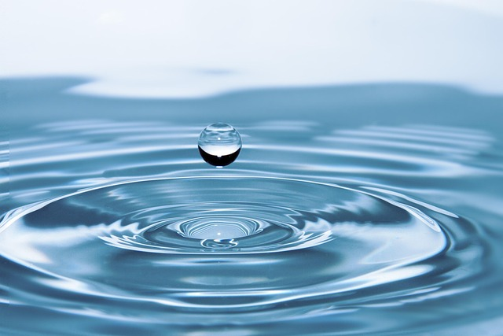

Un cuento sobre el ciclo del agua
Había una vez una pequeña gota de agua llamada Gotita, que vivía feliz en un río de agua H2O cristalino que corría entre montañas verdes y prados llenos de flores. Cada mañana, el sol saludaba con sus rayos dorados, y los peces jugaban a su alrededor.
-¡Hola, Gotita! -decía el pez Nemo-, ¿Listo para otro día de aventuras?
-¡Claro! -respondía Gotita, rebotando suavemente sobre las olas-, ¡Me encanta viajar con el río!
Pero un día, algo mágico pasó. El sol brilló con más fuerza, y Gotita sintió un cosquilleo en todo su cuerpo.
-¡Ay! -dijo-, ¡Me siento más ligera!
De pronto, empezó a elevarse lentamente, como si tuviera alas invisibles. ¡Estaba evaporándose!
Y así, Gotita subió y subió, hasta convertirse en una pequeña nube blanca en el cielo.
Para saber más sobre el ciclo del agua, visita este enlace .

Allá arriba, Gotita no estaba sola. Conoció a muchísimas otras gotas
que también habían subido desde ríos, lagos y mares.
Se tomaron todas de las manos y juntas formaron una nube grande y esponjosa,
como de algodón.
¡Era muy divertido flotar juntas por el cielo, empujadas por el viento!
“¡Qué blandita es nuestra casa nueva!”, decían riendo.
A esto, una gota más sabia les explicó que se llama
condensación.
La nube se hizo más y más grande a medida que llegaban más y más amigas gotas.
Una por una, comenzaron a caer de nuevo hacia la Tierra en forma de lluvia. ¡Y a esto se le llama la precipitación! Después de mojar el bosque, Gotita comenzó a fluir por un pequeño arroyo.
-¡Bienvenida de vuelta, Gotita! -dijo el río con un murmullo.
Y así, Gotita continuó su viaje en el gran ciclo del agua, lista para volver a subir, caer y ayudar a la Tierra a vivir.